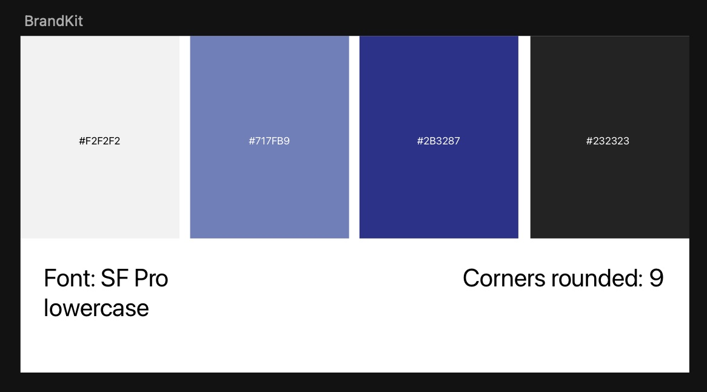
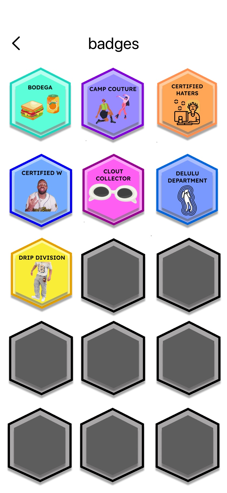
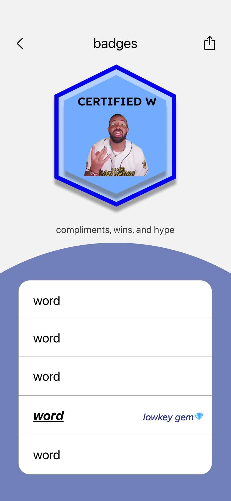
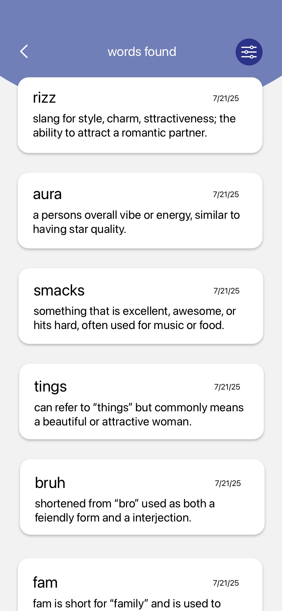
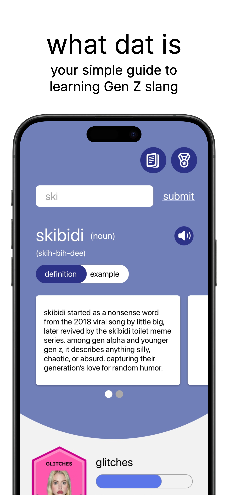

03 — Learning & games
What Dat Is?
A dictionary-style app that helps older generations learn Gen Z slang one word at a time — definitions, pronunciation, real examples, and a collectible badge system that makes learning feel like a game.

03 — Learning & games
A dictionary-style app that helps older generations learn Gen Z slang one word at a time — definitions, pronunciation, real examples, and a collectible badge system that makes learning feel like a game.
The competitive landscape was the most useful thing I looked at, because the gap in it was so obvious. Urban Dictionary — the default answer — is cluttered, unmoderated, and optimised for people who already know the word and want the joke. It is not built for someone trying to learn.
Everything else was either a listicle that went stale in a month or a social feed that assumed fluency. Nothing treated slang as a subject you could study. No pronunciation. No usage examples. No way to come back to a word you'd looked up last week and half-remembered.
Artifact slot — research
Competitive teardown of Urban Dictionary, or interview notes from the target age group.
Language evolves fast, and Gen Z slang evolves faster. New words appear daily, which leaves anyone in their late thirties and beyond quietly in the dark. Parents, coworkers, and family members are left out of conversations happening in front of them — or worse, misreading what was actually said.
The instinct is to treat this as a trivial problem. It isn't. The people I designed for weren't confused by a word; they were embarrassed to ask. Asking marks you as the person who doesn't get it, so they guessed, nodded, and drifted a little further out of the conversation.
The barrier was never comprehension. It was the cost of admitting you didn't understand.
That's why a better dictionary alone wouldn't fix it. The product needed to make looking things up feel like an activity you chose, not a deficiency you were correcting — private, self-paced, and satisfying enough that you'd do it before you needed to.
The visual direction had to solve a tone problem before it solved a layout one. Too playful and it patronises a fifty-year-old. Too clinical and it becomes homework.
I landed on a restrained system — a periwinkle and deep indigo palette, SF Pro set lowercase throughout, generous corner radii — and let the badges carry all the personality. The chrome stays calm; the rewards are loud. Lowercase type does a lot of quiet work here: it reads as casual rather than instructional, which is the whole difference between a dictionary and a tutor.

Words are grouped into themed sets — Bodega, Camp Couture, Certified Haters, Clout Collector, Delulu Department, Drip Division — and each set unlocks a badge at five words. Locked badges stay visible as grey hexagons, so you can always see how much is left. This reframes the entire experience: you're not failing to understand your kids, you're 2/5 of the way through Drip Division. Some words are flagged as lowkey gems, which gives the rarer finds a payoff.
Knowing what "rizz" means doesn't tell you how to say it without sounding like you learned it from an app. Every word carries a real usage example alongside the definition, on a toggle rather than a scroll, so the two are weighted equally instead of the example being an afterthought at the bottom. Pronunciation is spelled out phonetically with audio next to it, because mispronouncing the word is its own small humiliation.
Every word you look up is saved with the date you found it. This is the feature that makes the app worth keeping installed — slang is learned by repeat exposure, and a list you built yourself is far easier to come back to than a search you'd have to remember how to phrase again.



This was the most important fix in the project, and it came directly from watching people fail. Users were searching for words they had overheard, not read — so they typed what they thought they heard, got zero results, and concluded the app didn't have it. The exact failure the product existed to prevent.
I implemented fuzzy matching using Levenshtein distance, so a misspelling within a character or two of a real entry still returns the word. A dictionary for people who don't know the spelling can't require the spelling.
The earlier design read as too juvenile for the audience it was aimed at. The current system pulled the interface back toward restraint and pushed the energy into the badges — keeping the app fun without making its users feel talked down to.
Artifact slot — testing
Before/after of the visual style change, or the search-failure session notes that led to fuzzy matching.
The app is still in development for the App Store, so there are no usage numbers to report yet — the honest answer rather than a manufactured one.
What the project did produce is a design system I'd defend: the badge structure gives an endlessly-expanding subject a finite, satisfying shape, and the fuzzy search makes the app usable by people who encounter these words the way they actually encounter them — spoken, fast, and slightly misheard.
What I'd watch on launch: whether badge completion correlates with return visits, or whether people collect one set and stop. That single number would tell me if the gamification is doing real work or just decorating a dictionary.

Next project
Fourth Tri →